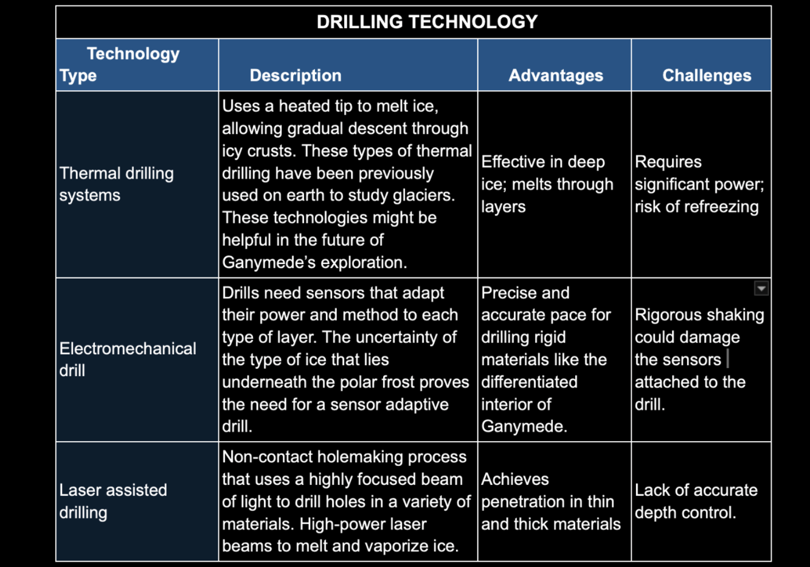

DISCOVER SIGNS OF LIFE
GANYMEDE
International Space University(ISU), 1 Rue Jean-Dominique Cassini, 67400 Illkirch-Graffenstaden, France
Abstract
Jupiter's moon Ganymede, the largest moon in the Solar System. Holds promising clues to potential habitability. Recent data from missions like Juno and Calileo suggest the existence of a subsurface ocean beneath its icy crust, raising the possibility of harboring life.
- HISTORY
- WHY GANYMEDE?
- TECH & INNOVATION
- ASTROBIOLOGY CASE + COMPARATIVE SCIENCE
- MISSION RECOMMENDATIONS
- PLANETARY PROTECTION
- INTERVIEWS
Introduction
Ganymede was discovered by Galileo Galilei on
January 7, 1610, during his
observations of Jupiter's moons. He
discovered Ganymede, along with three other large moons of Jupiter - Io, Europa, and Callisto - which are now
known as the Galilean moons.
This discovery was revolutionary at the time, as it provided evidence that not everything orbited the Earth,
contributing to the heliocentric model of the solar system. It should however be noted that due to its size
that Ganymede was probably seen by many ancient people with greater than average light perception, (NASA,
n.d.)
Historically, Ganymede, the largest moon of Jupiter, was assumed to be cold and uninhabitable due to its icy
surface. However, a change in perspective began in the late 20th century with the construction of the Galileo
satellite mission from 1995 - 2003. As a result of the spacecraft’s observation it revealed the breathtaking
discovery that Ganymede possesses a magnetic field, indicating a differentiated internal structure, which
might be formed of liquid iron core or iron-sulfide. Galileo provided evidence suggesting the existence of an
ocean underneath its crust, potentially composing salty liquid water. This finding placed Ganymede as a
potential candidate for hosting microbial life, similar to other icy moons (Bunce, E., 2022)
Further studies and research conducted on Ganymede in 2015 by the Hubble Space Telescope, detected changes in
Ganymedes auroras. The shifting of the auroras, influenced by Jupiter’s magnetic field, suggested the presence
of conductive, saltwater beneath Ganymede's surface. (Hubble Space Telescope Observation, 2015)
Now in the 2010s, interest in icy moon explorations started to mount, most notably in NASA's "Ocean Worlds"
program. Bodies such as Ganymede stood a good chance of being the most favored targets for astrobiological
investigations. The following missions include the ESA's JUICE mission, launched in 2023 and projected to
reach
its destination by 2031, which aims to conduct additional studies on the ice shell, surface, and magnetic
field of Ganymede in assessing its life-habitation potential. Meanwhile, NASA's Europa Clipper mission may
primarily target Europa, but information gathered in the mission will contribute further to the knowledge of
the habitability of icy moons, perhaps providing more context regarding Ganymede's propensity to host life
(Overview - JUICE - Cosmos. 2016).
The moon was named after a figure from Greek mythology, Ganymede, a young Trojan prince who was abducted by Zeus (Jupiter in Roman mythology) to serve as the cupbearer to the gods. The name was suggested by Simon Marius, a German astronomer who claimed to have discovered the moons independently, though Galileo is credited as the official discoverer.
Size and Composition: Ganymede is larger than the planet Mercury, with a diameter of about 5,268 kilometers (3,273 miles). It is made of roughly equal parts silicate rock and water ice with a metallic core, a silicate mantle, and an outer layer of ice.
Why Ganymede?
Historically, Ganymede, the largest moon of
Jupiter, was
assumed to be cold and uninhabitable due to its icy surface. However, a change in perspective began in
the
late 20th century with the construction of the Galileo satellite mission from 1995 - 2003. As a result
of
the spacecraft's observation it revealed the breathtaking discovery that Ganymede possesses a magnetic
field, indicating a differentiated internal structure, which might be formed of liquid iron core or
iron-sulfide. Galileo provided evidence suggesting the existence of an ocean underneath its crust,
potentially composing salty liquid water. This finding placed Ganymede as a potential candidate for
hosting microbial life, similar to other icy moons (Bunce, E., 2022)
Further studies and research conducted on Ganymede in 2015 by the Hubble Space Telescope, detected
changes
in Ganymedes auroras. The shifting of the auroras, influenced by Jupiter's magnetic field, suggested the
presence of conductive, saltwater beneath Ganymede's surface. (Hubble Space Telescope Observation, 2015)
Now in the 2010s, interest in icy moon explorations started to mount, most notably in NASA's "Ocean
Worlds" program. Bodies such as Ganymede stood a good chance of being the most favored targets for
astrobiological investigations.The following missions include the ESA's JUICE mission, launched in 2023
and projected to reach its destination by 2031, which aims to conduct additional studies on the ice
shell,
surface, and magnetic field of Ganymede in assessing its life-habitation potential. Meanwhile, NASA's
Europa Clipper mission may primarily target Europa, but information gathered in the mission will
contribute further to the knowledge of the habitability of icy moons, perhaps providing more context
regarding Ganymede's propensity to host life (Overview - JUICE - Cosmos. 2016).
The surface of Ganymede receives approximately 0.08 sieverts per day of radiation exposure, which is an
enormous dose compared to earth, which receives only 0.0014 sieverts per day. Ringwald, F. (2000) This
radiation exposure would induce acute radiation sickness in only 25 days. Arnautou, P (2024) However,
extremophiles such as the tardigrade can survive up to 10 sieverts before being rendered sterile
Horikawa,
D. et al (2006), which is equivalent to 125 days. Given the mating frequency of tardigrades being 50
days
Bingemer J. et al (2016), a self-sustaining colony of tardigrades could theoretically live and mate on
the
surface of Ganymede from a radiation perspective. However, it must be noted that at the temperatures
present on Ganymede (110 kelvin) Delitsky, M. et al (1998) the tardigrades would probably enter into
hibernation. Horikawa, D. (2011).
The magnetic field of Ganymede is one of the most unique things about it. However, it only has a field
strength of 750 nT at the equator Kivelson, M. et al (2002), which is only 1/40th that of earth. Finlay,
C. et al (2010) This makes it rather unlikely to make much of a difference to the radiation environment
on
the ground. Kivelson, M. et al (1996).
Additionally, it should be noted that Ganymede's ocean is under 150 km of ice Pappalardo, R. et al
(2004)
which would no doubt provide a great deal of radiation protection of its own.
Ganymede, the third satellite moon of Jupiter, has the largest body of water in the solar system. It is the only moon known to have its own magnetosphere and the reason behind this magnetic force has been debated, there being two possibilities of the moon’s interior properties. The moon has a composition of three main layers. A metallic core, a band of rock surrounding the core also known as a mantle, icy shell and silicate rock. Ganymede is said to have a possible ‘club sandwich-like’ layer beneath the icy surface. This interaction of water and rock raises the possibility of a saltwater ocean beneath its surface. The other theory is that the core of Ganymede remains warm and liquid rather than a solid mass. The reason for that hypothesis is that the magnetic field around the moon might be a result of it. This theory was posed by Magaret Kivelson at NASA who worked as the principal investigator of the magnetometer on Galileo spacecraft. (Margaret, 2019). Galileo's trajectory to Ganymede indicated surfaces on the north poles that could be covered with water-ice frosts. (David, 2000).

In Figure 1.1 and 1.2, there are two possibilities of the interior of Ganymede. Without any concrete
evidence on the true composition of the moon’s interior, research should be conducted on not only the
surface of Ganymede, but past the exterior layer.
Researchers believed that high levels of atomic oxygen were responsible for the ultraviolet glow seen in
images of Ganymede’s auroras. But when scientists Lorenz Roth and Nickolay Ivchenko analyzed the images
more closely, they found very little atomic oxygen in Ganymede’s atmosphere. They also noticed that
certain spectral lines did not disappear, even when the moon passed into Jupiter’s shadow. After further
investigation, they discovered that these lines were actually due to water molecules evaporating from
Ganymede’s icy surface. (Nickolay, 2021)
The lack of a probe or material/resource extractor on the JUICE mission sets back the understanding on
interior properties of the moon. Factoring the time, distance constraints and inevitably the cost
effects of launching such missions, the space exploration expectation of 2025-2050 would require a more
adequate approach to moon explorations other than images, radiation measurements and atmosphere
detections. (ESA, 2023).
The proposed technologies below would create a better picture of what is usually expected of future
missions on subsurface. However, discussion on whether this is the most optimum way to proceed follows
the next section.

The Laplace-P mission to Ganymede was designed to explore the Jovian system with both an orbiter and
lander. By mapping the moon's surface, the LP1 orbiter could help pinpoint potential drilling sites by
providing data on geological features like impact craters and variations in the icy crust’s structure
(Laplace-P, 2017).
Studies of Ganymede’s impact craters from previous missions (such as Voyager, Galileo, and Juno) suggest
a stratified subsurface with distinct layers, including dark and bright ejecta blankets, that reveal
information about the moon’s material composition. By understanding and combining the mapping data and
crater analysis, the mission can enhance drilling accuracy and maximize the potential for uncovering
evidence of life-supporting environments beneath Ganymede’s icy shell. (AGU, 2013)
The atmosphere of Ganymede is very tenuous, mainly composed of O₂ and O, and with trace amounts of water vapor, and H₂O, which has been detected very recently by the Hubble Space Telescope. The superficial pressure is so low that the atmosphere may be compared to that of a vacuum, and it is hostile for all life as we know it.
In Figure 1.1 and 1.2, there are two possibilities of the interior of Ganymede. Without any concrete
evidence on the true composition of the moon’s interior, research should be conducted on not only the
surface of Ganymede, but past the exterior layer.
Researchers believed that high levels of atomic oxygen were responsible for the ultraviolet glow seen in
images of Ganymede’s auroras. But when scientists Lorenz Roth and Nickolay Ivchenko analyzed the images
more closely, they found very little atomic oxygen in Ganymede’s atmosphere. They also noticed that
certain spectral lines did not disappear, even when the moon passed into Jupiter’s shadow. After further
investigation, they discovered that these lines were actually due to water molecules evaporating from
Ganymede’s icy surface. (Nickolay, 2021)
The lack of a probe or material/resource extractor on the JUICE mission sets back the understanding on
interior properties of the moon. Factoring the time, distance constraints and inevitably the cost
effects of launching such missions, the space exploration expectation of 2025-2050 would require a more
adequate approach to moon explorations other than images, radiation measurements and atmosphere
detections. (ESA, 2023).
The proposed technologies below would create a better picture of what is usually expected of future
missions on subsurface. However, discussion on whether this is the most optimum way to proceed follows
the next section.
O2, O (Atomic Oxygen), H2O (water vapor), H2 (Hydrogen), CO2
The atmosphere of Ganymede could contain other elements in trace amounts. However, to date, none have been confirmed in any significant quantity. For instance, hydrogen gas (H₂) is bound to occur in extremely low amounts, but manages to leak into space because of the low gravitational hold of the moon (Hall D. T.,1998).
Surface Pressure
The surface pressure of the atmosphere of Ganymede is low, about 10⁻⁶ to 10⁻⁸ bar.
Auroras and Magnetic Field
The only moon known to possess a magnetic field; Ganymede supports auroras detectable in ultraviolet light. These Hubble-detected auroras, serving as indirect evidence of atmospheric composition, are affected by an interaction between Jupiter's magnetic field with the tenuous atmosphere of Ganymede (Roth, 2016).
Galileo and its Instrument
The surface pressure of the atmosphere of Ganymede is low, about 10⁻⁶ to 10⁻⁸ bar.

The NASA spacecraft Galileo, between 1995 and 2003, was equipped with various tracked scientific
instruments during its exploration of Jupiter and its moons, especially Ganymede. The Solid-State
Imaging (SSI) Camera and Near-Infrared Mapping Spectrometer (NIMS) were key instruments that
provided notable imagery and surface composition information, such as water ice. The Magnetometer
indicated that Ganymede possessed a unique magnetic field, probably due to a plausible liquid
interior or subsurface ocean. Further instruments-PLS and EPD-revealed information on Ganymede's
interaction with Jupiter's magnetosphere. These discoveries provided compelling evidence for
geological activity on Ganymede and a chance at future habitability, thus laying the groundwork for
missions such as ESA's JUICE (Hutchison, A. 1995).
Innovation & Technology
Captured high quality images of Jupiter and its satellites, including the features of Ganymede’s
surface, tectonic structures, the rocks formed and the groves. The SSi camera provided data for the
terra mapping of Ganymede’s surface and the analysis of its geological processes
Near Infrared Mapping Spectrometer (NIMS)
This Instrument is used to study the composition of Ganymede's surface by deflecting reflected
sunlight in the IR spectrum. This instrument has identified water ice and other surface materials, and
generated evidence of possible organic compounds, that helps to infer composition and potential
presence of an ocean under the icy crust.
Ultraviolet Spectrometer (UVS)
This instrument analyzed the ultraviolet light on the surface of Ganymede and its atmosphere, which
provided data on Ganymede’s thin oxygen atmosphere and helped in the study of the auroras that form,
which then indicated interactions with Jupiter’s magnitude.
Mission Reco
Our proposed Ganymede exploration mission aims to deepen our understanding of this unique Jovian moon
through a multi-phase, International approach:
Orbital & Lander reconnaissance:
There is a good science case for exploration in going to Ganymede with a lander - as there is not much else planned from orbit beyond JUICE.
After we start to receive JUICE data ideally, and those from Europa and Enceladus, the lander with
complementary instruments .
As Ganymede’s surface is not properly mapped, it would need to have some sensibilities and autonomous/AI
navigation for hazard mitigation - To first detect ideal landinsg sites, then advanced sensors to navigate
towards good spots potentially by what is underneath the surface.
For this we could consider the capabilities and advancements made by India with landings and rover mobility,
as demonstrated by Chandrayaan-3’s soft landing and Mangalyaan missions.
Subsurface exploration:
The advanced Spectrometer was taken off the Laplace project with Russia, originally meant to be on JUICE when the former
was cancelled. The GCMS (Gas Chromatography Mass Spectrometer) in particular, among other instruments, can
reveal a great deal about chemical composition of atmosphere and sub-surface with probes, revealing potential
biomarkers and signatures.
To investigate potential habitats and analyze ice-ocean interfaces for signs of life
(Landing also makes experiments like the mass spectrometry much easier without a moving target, for eg).
Data relay and analysis:
To enable comprehensive interpretation of findings.
AI would also be involved in analyzing the data; perhaps on site.
These approaches would be more refined and relevant than drilling through layers of thick ice of 150 km+.
We may consider the involvement of private space companies here making leaps in domains of such relevance.
AstroBiology
Table of parameters usually considered for habitability on exoplanets, compared with those conditions on
Earth.
With this, we attempt to find the knowledge gaps in the study of the body as an astrobiological target,
proposing experiments for Ganymede that might bridge that gap.
Microbial life wise:
In newer research very recently discussed - (*unpublished) -
In continuing experiments, the search for amino acids, (amines), & nucleobases (+ fatty acids) would be the
essential biomarkers.
On simulated icy moon surface, with Jupiter’s unique radiation environment (Prof Bhala (Private
Communication), Physical Research Laboratory, 2024) successfully synthesized Sulphur containing amino acids
– essential for life!
The team also found through JWST observations, an ammoniated molecule on Callisto.
Hence the environments we are studying are very interesting and still teeming with undiscovered secrets.
There is a unique case to be made for studying Ganymede. Being the second farthest of the Galilean moons with Jupiter, it is not too negatively affected by Io’s Sulphur radiation potentially and other environmental activities. The relatively unmodified surface for over 10,000s of years, though with traces of impact, also make it one of the most preserved (pristine) bodies. Why Ganymede you may ask? When excited by the possibilities of Europa and Enceladus -- the obvious, more immediate candidates for habitability studies. In fact the prospects are unique - being not the conventional candidate, insight into Ganymede may open doors to venture to different kinds of bodies and further solar system exploration in the search for life.
Interview
References
Advanced Russian Mission Laplace-P to Study the Planetary System of Jupiter: Scientific Goals, Objectives,
Special Features and Mission Profile
AGU (2013), An MHD model of Ganymede's mini-magnetosphere suggests that the heliosphere forms in a
sub-Alfvénic flow - Read
More
Arnautou, P et al (2024) Management of acute radiation syndrome - Read More
Bingemer J. et al (2016) First detailed observations on tardigrade mating behaviour - Read
More
Brettschneider, E. A. (2023). Exploring the ethics of human space travel - Honors Thesis, Eastern Kentucky
University
Bunce, E. (2022). Going to Ganymede - Read More
Canva (2024). Jupiter planet and satellite Ganymede in the outer space [Video]. - View Video
Constantine, T. (2002). The structural and orbital evolution of the Galilean satellites - Wayback
Machine
COSPAR (2024). COSPAR Policy on Planetary Protection - Space Research Today, 220
David M. Harland (2000). Jupiter Odyssey, The story of NASA’s Galileo Mission
Delitsky, M. et al (1998) Ice Chemistry on the Galilean Satellites - Read
More
Doran, P., Hayes, A., Grasset, O., Prieto-Ballesteros, O., & Coustenis, A. (2023). Planetary Protection of
Icy Worlds: Discussion Primer
ESA (2023). Spotlight on Ganymede - Read
More
European Cooperation for Space Standardization (2019). ECSS-U-ST-20C: Space sustainability
European Space Agency (2023). Inside Ganymede [Video] - View Video
Finlay, C. et al (2010). International Geomagnetic Reference Field - Read More
Hall, D. T., Feldman, P. D., McGrath, M. A., & Strobel, D. F. (1998). The far-ultraviolet oxygen airglow of
Europa and Ganymede
Horikawa, D. (2011). Survival of Tardigrades in Extreme Environments - Read More
Horikawa, D. et al (2006). Radiation tolerance in the tardigrade Milnesium tardigradum - Read More
Howell, E. (2017). Spacecraft Galileo: To Jupiter and Its Moons - Read More
Hutchison, A. (1995). Galileo Mission - Read
More
Jet Propulsion Technology (2014). Possible "Moonwich" of Ice and Oceans on Ganymede
Kivelson, M. et al (1996). Discovery of Ganymede's magnetic field - Read More
Kivelson, M. et al (2002). The Permanent and Inductive Magnetic Moments of Ganymede
Ligier, N. et al (2019). Surface composition and properties of Ganymede - Read More
Margaret, K. (2019). Interview with Margaret Kivelson - NASA Science
Marin, D. (2016). Proyecto Laplas-P: Rusia en Ganímedes - Read More
NASA (n.d.). NASA’s Europa Clipper - Read More
Planetary Protection
The investigation of the ocean beneath Ganymede’s surface places it as a significant aspect in the search
for unknown life, while also identifying the critical issue of protecting the planet's characteristics.
Planetary protection refers to the measures taken to prevent any contamination on our planet and other
celestial bodies. Two classifications are identified in planetary protection: forward and backward
contamination, and various international actions are being undertaken to manage this concern (ECSS, 2019).
The COSPAR guidelines for planetary protection classify space exploration missions based on the likelihood
and impact of biological contamination. Scientific missions to icy worlds, like Ganymede, operate under the
guidelines of Category III and Category IV protection standards (Doran et al., 2023). Maintaining the
integrity of scientific pursuits requires a proactive approach to identifying and mitigating any possible
contamination of the subsurface ocean or liquid water habitats. COSPAR emphasizes the importance of managing
bioburden to reduce the likelihood of organisms persisting on spacecraft and potentially colonizing
environments over the next millennium (ECSS, 2019).
The exploration of an unknown world which carries significant implications, which include dilemmas
particularly when thinking about the undiscovered life forms that may inhabit the planet. Brettschneider
(2023) argues that establishing ethical standards for missions in outer space is vital for recognizing the
existence, independence, and values of alien entities. This action emphasizes the conservation of untouched
ecosystems by conducting ethical research, which coincidentally strives to reduce human impact of an alien
environment.
Alongside this, the Outer Space Treaty established in 1967 and the missions to Ganymede form a collective
international commitment. In 2024, COSPAR will be renewed, introducing a methodology that can be tailored to
fit the unique circumstances of each mission. This adaptable framework not only strives to preserve ethical
norms but also fosters the development of scientific studies. The recent revision of COSPAR (COSPAR, 2024)
emphasizes the importance of conserving extraterrestrial planetary ecosystems and aims to achieve a balance
with rigorous scientific research methodologies.
Furthermore, the ECSS Standard highlights the importance of implementing safety measures during the
exploration of Ganymede, underscores the need for sterilization, and outlines specific procedures aimed at
minimizing bioburden. In scenarios where contact with terrestrial settings is likely, it becomes essential
to focus on minimizing microbial contamination throughout planetary expeditions (ECSS, 2019).
The pursuit of missions to Ganymede brings to light both captivating research opportunities and critical
discussions surrounding planetary protection and ethical responsibilities. Compliance with COSPAR and ECSS
regulations holds significant importance for every task executed in the context of the Ganymede exploration.
Contact
-----------------------------------------------------------------------------------------------------------